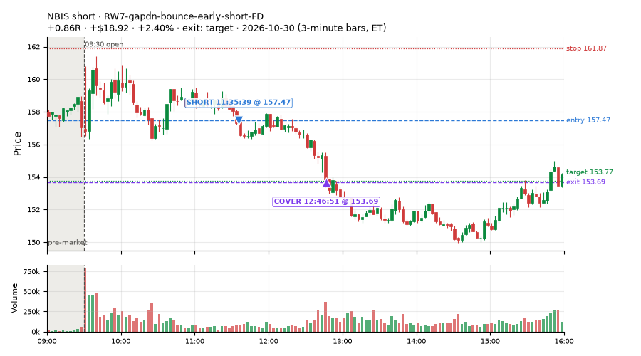
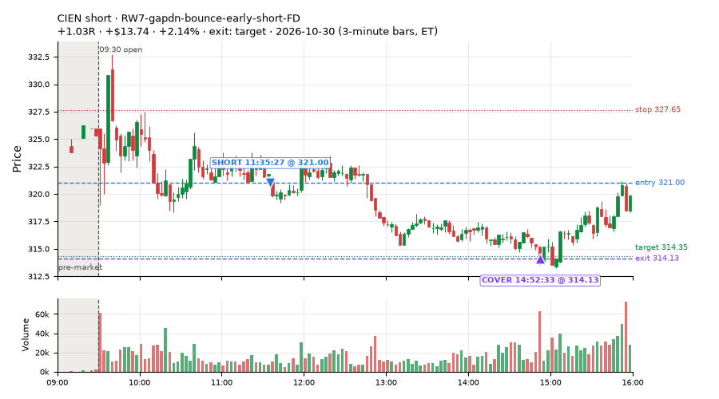
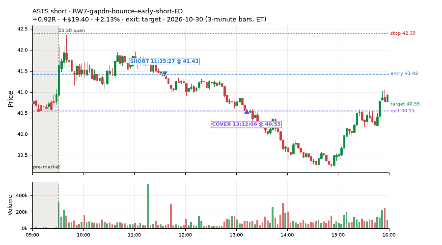
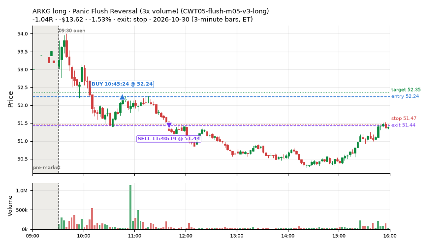
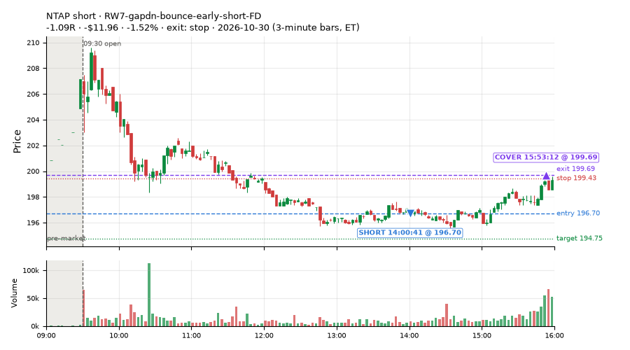
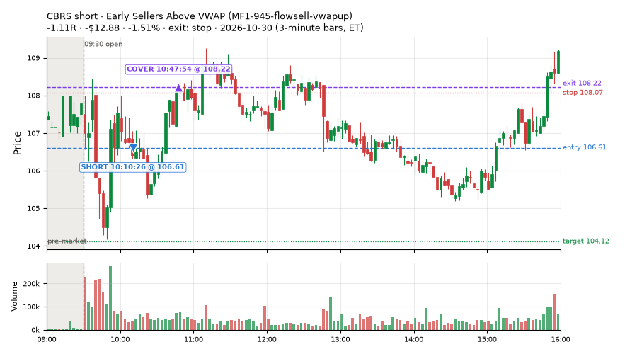
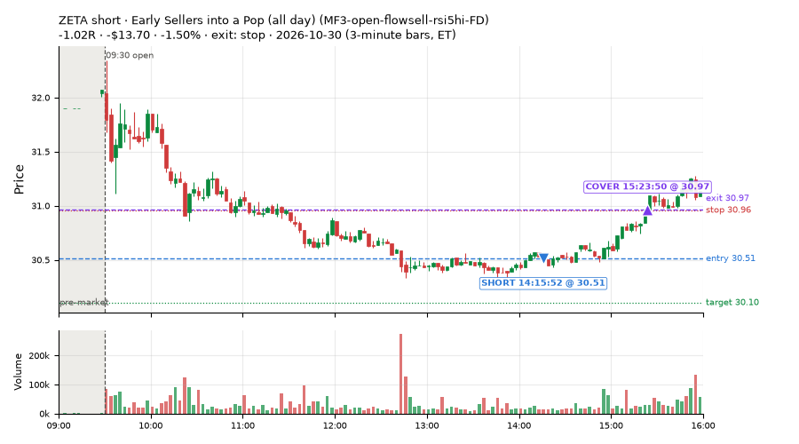

43 trades · win rate 58% · P/L $60.80
PROBATION: no live setup has passed both locked test periods. 10 owner-directed setups added 2026-10-08 (MarcoFlow top 5 + 5 new), untested live. RW6G1 (RW6 + VWAP band guard) added 2026-10-09, probation.

| Symbol | Setup | Side | In | Out | Entry | Exit | Exit reason | % gained | P/L |
|---|---|---|---|---|---|---|---|---|---|
| NBIS | RW7-gapdn-bounce-early-short-FD | short | 11:35 | 12:46 | 157.47 | 153.69 | target | +2.40% | $18.92 |
| CIEN | RW7-gapdn-bounce-early-short-FD | short | 11:35 | 14:52 | 321.00 | 314.13 | target | +2.14% | $13.74 |
| ASTS | RW7-gapdn-bounce-early-short-FD | short | 11:35 | 13:12 | 41.43 | 40.55 | target | +2.13% | $19.40 |
| Symbol | Setup | Side | In | Out | Entry | Exit | Exit reason | % lost | P/L |
|---|---|---|---|---|---|---|---|---|---|
| TWST | RW7-gapdn-bounce-early-short-FD | short | 14:00 | 15:47 | 150.64 | 154.35 | stop | -2.46% | $-22.26 |
| ARKG | CWT05-flush-m05-v3-long | long | 10:45 | 11:40 | 52.24 | 51.44 | stop | -1.53% | $-13.62 |
| NTAP | RW7-gapdn-bounce-early-short-FD | short | 14:00 | 15:53 | 196.70 | 199.69 | stop | -1.52% | $-11.96 |
| CBRS | MF1-945-flowsell-vwapup | short | 10:10 | 10:47 | 106.61 | 108.22 | stop | -1.51% | $-12.88 |
| ZETA | MF3-open-flowsell-rsi5hi-FD | short | 14:15 | 15:23 | 30.51 | 30.97 | stop | -1.50% | $-13.70 |







Signal to fill: median 1s, 90th percentile 2s (43 trades). Bars close each minute; the order follows the bar close.
Best excursion (MFE): median 0.60R; worst (MAE) median 0.49R. 26% of trades never got +0.25R in our favour; 0 reached +1R and still closed at or below 0.
| Symbol | Setup | Best R | Worst R | Closed R |
|---|---|---|---|---|
| CBRS | MF1-945-flowsell-vwapup | +0.92 | -1.02 | -1.11 |
| TWST | RW7-gapdn-bounce-early-short-FD | +0.60 | -1.11 | -1.05 |
| NTAP | RW7-gapdn-bounce-early-short-FD | +0.41 | -1.04 | -1.09 |
| BUG | CWT05-flush-m05-v3-long | +0.39 | -1.03 | -1.03 |
| CRWD | RW7-gapdn-bounce-early-short-FD | +0.40 | -1.06 | -1.01 |
| Entry time | Trades | Win | Avg R | P/L |
|---|---|---|---|---|
| 09:50-10:30 | 5 | 40% | -0.48 | $-19.91 |
| 10:30-11:30 | 8 | 75% | +0.31 | $12.68 |
| 11:30-13:00 | 13 | 100% | +0.93 | $134.53 |
| 13:00-14:00 | 6 | 33% | -0.47 | $-19.48 |
| 14:00-16:00 | 11 | 18% | -0.59 | $-47.02 |
| Setup | Trades | Win | Avg R | Adj R (net of SPY) | P/L |
|---|---|---|---|---|---|
| Panic Flush Reversal (3x volume) (CWT05-flush-m05-v3-long) | 4.0 | 25% | -0.68 | -0.72 | $-24.20 |
| Early Sellers Above VWAP (MF1-945-flowsell-vwapup) owner-directed; holdouts once: Sep-Oct +0.169R n86, Apr-Jun -0.050R n429 | 1.0 | 0% | -1.11 | -1.08 | $-12.88 |
| Early Sellers into a Pop (all day) (MF3-open-flowsell-rsi5hi-FD) | 1.0 | 0% | -1.02 | -1.02 | $-13.70 |
| NS1-rsidip-rsi5pop-long-FD | 1.0 | 100% | +0.48 | +0.62 | $4.91 |
| NS4-pm-vwap-reclaim-oversold-short-FD | 1.0 | 0% | -1.03 | -0.99 | $-9.60 |
| NS5-sma50-flush-oversold-long-FD | 1.0 | 0% | -0.21 | -0.93 | $-1.68 |
| RW7-gapdn-bounce-early-short-FD | 27.0 | 74% | +0.39 | +0.07 | $100.14 |
| ST8-volspikedn-long-pm-t1s1-FD | 2.0 | 100% | +1.03 | +0.79 | $26.41 |
| Index Last-Half-Hour Momentum (intraday_momentum) failed Apr-Jun holdout: -0.091R/trade over 147 trades | 4.0 | 0% | -1.03 | +0.16 | $-10.63 |
| 20-Minute Opening Range Breakout (orb20_a) failed Apr-Jun holdout: -0.040R/trade over 421 trades | 1.0 | 100% | +0.06 | +0.20 | $2.03 |
Market direction (SPY, beta 1) accounted for $56.67 of today's $60.80; the rest ($4.13) came from the setups themselves. Avg R net of SPY: -0.04 (incl. a hedge leg's cost; report only).
30 setups live today. Today: 100 signals, 43 taken, 0 lost because another setup held the symbol (0%). Since 2026-10-09 (16 sessions): 8071 signals, 3365 taken, 736 lost to other setups (9%). Peak open positions today 18 of 400 slots. Earnings blackout removed 1872 symbols before scanning.
Simulated playing time (not live): 4374 what-if trades of signals not taken, avg -0.14R, 48% winners; of them 583 lost to another setup (avg +0.03R).
Silent: RW6G1-ns2-up3-vwap2sd-short, IDX1-qqq100-0955-TQQQ-trail, IDX1-qqq100-0955-TQQQ-hold, IDX2-spy075-0945-3x-trail, IDX3-spy075-0955-3x-trail, IDX5-spy050-0945-3x-trail · Crowded out: ST3-rsi5up-short-pm-t1s1-FD, ST4-emadn-long-am-t1s05-FD, NS5-sma50-flush-oversold-long-FD, RW4-ns3-adv150-short-FD, MF3-open-flowsell-rsi5hi, RW4-ns3-adv150-short, MF4-h40-open-flowsell-FD, NS3-failed-vwap-reclaim-short-FD · Starved: MF1-945-flowsell-vwapup, LIQ-pdl-sweep-open15-vwap-long, ST5-pdbrkup-short-mid-t05s1-FD, MF5-flowsell-vwapup-rsi5hi, exhaustion_short-FD, orb20_a, NS2-sma50break-overbought-short, MF1-945-flowsell-vwapup-FD
| Prio | Setup | Today sig / taken | Sessions | Signals / taken / trades | Taken/day | Expected/day | Lost to other setups | Lost to (setup n) | Top skip reasons | SIMULATED: not-taken n / avg R / win | Verdict |
|---|---|---|---|---|---|---|---|---|---|---|---|
| 1 | Early Sellers Above VWAP MF1-945-flowsell-vwapup | 2 / 1 | 6 | 12 / 5 / 5 | 0.83 | 5.33 | 0 | – | spread / quote / size 6, not shortable / shorts off 1 | 7 / +1.24R / 43% | starved 0.83 entries/day vs ~5.33 expected |
| 2 | Big Gainer Fade with VWAP Band Guard RW6G1-ns2-up3-vwap2sd-short | 0 / 0 | 8 | 0 / 0 / 0 | 0.00 | 0.40 | 0 | – | – | 0 / – | silent no signals in 8 session(s), ~3.2 expected |
| 3 | Index Dip Bounce 1 TQQQ IDX1-qqq100-0955-TQQQ-trail | 0 / 0 | 11 | 0 / 0 / 0 | 0.00 | – | 0 | – | – | 0 / – | silent no signals in 11 session(s); no expected rate on file |
| 4 | Index Dip Bounce 1 TQQQ (hold) IDX1-qqq100-0955-TQQQ-hold | 0 / 0 | 11 | 0 / 0 / 0 | 0.00 | – | 0 | – | – | 0 / – | silent no signals in 11 session(s); no expected rate on file |
| 5 | Index Dip Bounce 2 3x S&P IDX2-spy075-0945-3x-trail | 0 / 0 | 11 | 0 / 0 / 0 | 0.00 | – | 0 | – | – | 0 / – | silent no signals in 11 session(s); no expected rate on file |
| 6 | Index Dip Bounce 3 3x S&P IDX3-spy075-0955-3x-trail | 0 / 0 | 11 | 0 / 0 / 0 | 0.00 | – | 0 | – | – | 0 / – | silent no signals in 11 session(s); no expected rate on file |
| 7 | Index Dip Bounce 5 3x S&P IDX5-spy050-0945-3x-trail | 0 / 0 | 11 | 0 / 0 / 0 | 0.00 | – | 0 | – | – | 0 / – | silent no signals in 11 session(s); no expected rate on file |
| 8 | Prior-Day Low Sweep Reversal to VWAP LIQ-pdl-sweep-open15-vwap-long | 0 / 0 | 14 | 1 / 1 / 1 | 0.07 | 0.38 | 0 | – | – | 0 / – | starved 0.07 entries/day vs ~0.38 expected |
| 9 | ST5-pdbrkup-short-mid-t05s1-FD ST5-pdbrkup-short-mid-t05s1-FD | 4 / 0 | 15 | 19 / 2 / 2 | 0.13 | 0.78 | 0 | – | not shortable / shorts off 9, split-tape short gate 6, spread / quote / size 1 | 17 / -0.32R / 47% | starved 0.13 entries/day vs ~0.78 expected |
| 10 | ST8-volspikedn-long-pm-t1s1-FD ST8-volspikedn-long-pm-t1s1-FD | 2 / 2 | 15 | 12 / 10 / 10 | 0.67 | 1.05 | 1 | orb20_a 1 | symbol held by another setup 1, spread / quote / size 1 | 2 / -0.07R / 50% | slow 3.3 entries/week; ~18 weeks to 60 trades |
| 11 | RSI Collapse Dip Buy, Nasdaq-below-VWAP only (all day) ST7Q-rsi50dn-qqqbelowvwap-long-t1s1-FD | 0 / 0 | 6 | 2 / 2 / 2 | 0.33 | 1.25 | 0 | – | – | 0 / – | slow 1.7 entries/week; ~36 weeks to 60 trades |
| 12 | ST6-volspikeup-short-mid-t1s1-FD ST6-volspikeup-short-mid-t1s1-FD | 0 / 0 | 15 | 23 / 6 / 6 | 0.40 | 1.24 | 4 | RW4-ns3-adv150-short-FD 3, NS3-failed-vwap-reclaim-short 3, NS3-failed-vwap-reclaim-short-FD 1 | split-tape short gate 6, symbol held by another setup 4, not shortable / shorts off 4 | 15 / -0.21R / 33% | slow 2.0 entries/week; ~30 weeks to 60 trades |
| 13 | ST3-rsi5up-short-pm-t1s1-FD ST3-rsi5up-short-pm-t1s1-FD | 0 / 0 | 15 | 17 / 2 / 2 | 0.13 | 1.35 | 6 | ST2-slope20up-long-am-t05s1-FD 4, RW4-ns3-adv150-short-FD 2, NS3-failed-vwap-reclaim-short 2 | symbol held by another setup 6, not shortable / shorts off 4, split-tape short gate 4 | 10 / -0.34R / 20% | crowded-out 6 of 17 signals (35%) lost to setups already holding the symbol |
| 14 | ST4-emadn-long-am-t1s05-FD ST4-emadn-long-am-t1s05-FD | 1 / 0 | 15 | 23 / 13 / 13 | 0.87 | 2.77 | 6 | RW7-gapdn-bounce-early-short-FD 2, RW5-heat30-flowsell-rsi5pop-gapdn-short-FD 2, orb20_a 1 | symbol held by another setup 6, spread / quote / size 3, other 1 | 10 / -0.40R / 30% | crowded-out 6 of 23 signals (26%) lost to setups already holding the symbol |
| 15 | NS4-pm-vwap-reclaim-oversold-short-FD NS4-pm-vwap-reclaim-oversold-short-FD | 6 / 1 | 15 | 53 / 26 / 26 | 1.73 | 3.57 | 4 | L3-gap-slope-fromopen-FD 3, NS1-rsidip-rsi5pop-long-FD 1 | not shortable / shorts off 13, spread / quote / size 9, symbol held by another setup 4 | 27 / +0.07R / 44% | slow 8.7 entries/week; ~7 weeks to 60 trades |
| 16 | RW6G1-ns2-up3-vwap2sd-short-FD RW6G1-ns2-up3-vwap2sd-short-FD | 1 / 0 | 15 | 39 / 27 / 27 | 1.80 | 3.73 | 2 | RW6G1-ns2-up3-vwap2sd-short-FD 1, RW6-ns2-up3-short-FD 1, NS2-sma50break-overbought-short-FD 1 | not shortable / shorts off 3, split-tape short gate 3, spread / quote / size 3 | 12 / +0.14R / 58% | slow 9.0 entries/week; ~7 weeks to 60 trades |
| 17 | Panic Flush Reversal (3x volume) CWT05-flush-m05-v3-long | 7 / 4 | 8 | 34 / 24 / 24 | 3.00 | – | 0 | – | spread / quote / size 8, daily loss cap 1, other 1 | 10 / -0.29R / 50% | ok 15.0 entries/week |
| 18 | L3-gap-slope-lowdist-FD L3-gap-slope-lowdist-FD | 12 / 0 | 15 | 245 / 57 / 57 | 3.80 | 9.76 | 8 | RW6-ns2-up3-short-FD 3, NS2-sma50break-overbought-short-FD 3, L3-gap-slope-rsi5hi-FD 3 | not shortable / shorts off 90, daily loss cap 72, spread / quote / size 11 | 181 / -0.21R / 44% | ok 19.0 entries/week |
| 19 | NS1-rsidip-rsi5pop-long-FD NS1-rsidip-rsi5pop-long-FD | 1 / 1 | 15 | 55 / 40 / 40 | 2.67 | 5.39 | 5 | L3-gap-slope-fromopen-FD 5 | symbol held by another setup 5, daily loss cap 5, spread / quote / size 5 | 15 / -0.20R / 53% | slow 13.3 entries/week; ~4 weeks to 60 trades |
| 20 | NS5-sma50-flush-oversold-long-FD NS5-sma50-flush-oversold-long-FD | 2 / 1 | 15 | 52 / 32 / 32 | 2.13 | 6.32 | 13 | RW4-ns3-adv150-short-FD 10, NS3-failed-vwap-reclaim-short 10, NS3-failed-vwap-reclaim-short-FD 8 | symbol held by another setup 13, spread / quote / size 4, daily loss cap 2 | 10 / +0.53R / 80% | crowded-out 13 of 52 signals (25%) lost to setups already holding the symbol |
| 21 | Sellers into Strength (all day) MF5-flowsell-vwapup-rsi5hi | 0 / 0 | 10 | 61 / 30 / 30 | 3.00 | 15.47 | 13 | MF5-flowsell-vwapup-rsi5hi-FD 10, MF3-open-flowsell-rsi5hi 2, CWT12-coil-k6-long 1 | symbol held by another setup 13, spread / quote / size 13, not shortable / shorts off 3 | 30 / -0.03R / 47% | starved 3.00 entries/day vs ~15.47 expected |
| 22 | RW4-ns3-adv150-short-FD RW4-ns3-adv150-short-FD | 5 / 0 | 15 | 167 / 84 / 84 | 5.60 | 17.34 | 44 | RW4-ns3-adv150-short-FD 20, NS3-failed-vwap-reclaim-short 17, NS3-failed-vwap-reclaim-short-FD 15 | symbol held by another setup 44, not shortable / shorts off 20, spread / quote / size 15 | 59 / -0.24R / 32% | crowded-out 44 of 167 signals (26%) lost to setups already holding the symbol |
| 23 | Big Loser VWAP Reclaim Fade NS3-failed-vwap-reclaim-short | 0 / 0 | 13 | 69 / 43 / 43 | 3.31 | 3.03 | 5 | LIQ-orl-sweep-open15-s25-long 3, heat_fade_short 1, heat_fade_short-FD 1 | not shortable / shorts off 13, spread / quote / size 8, symbol held by another setup 5 | 18 / -0.31R / 28% | ok 16.5 entries/week |
| 24 | Early Sellers into a Pop (all day) MF3-open-flowsell-rsi5hi-FD | 6 / 1 | 15 | 218 / 96 / 96 | 6.40 | 24.16 | 39 | MF5-flowsell-vwapup-rsi5hi-FD 17, RW5-heat30-flowsell-rsi5pop-gapdn-short-FD 9, RW3-gapdn-rsi5pop-flowsell-short-FD 6 | daily loss cap 42, symbol held by another setup 39, spread / quote / size 23 | 114 / +0.13R / 60% | ok 32.0 entries/week |
| 25 | Early Sellers into a Pop MF3-open-flowsell-rsi5hi | 1 / 0 | 10 | 51 / 6 / 6 | 0.60 | 9.19 | 30 | MF3-open-flowsell-rsi5hi-FD 27, MF5-flowsell-vwapup-rsi5hi 10, MF5-flowsell-vwapup-rsi5hi-FD 7 | symbol held by another setup 30, spread / quote / size 11, not shortable / shorts off 3 | 45 / -0.34R / 36% | crowded-out 30 of 51 signals (59%) lost to setups already holding the symbol |
| 26 | RW7-gapdn-bounce-early-short-FD RW7-gapdn-bounce-early-short-FD | 38 / 27 | 15 | 589 / 329 / 329 | 21.93 | 59.92 | 37 | LIQ-orl-sweep-open15-s25-long 11, RW1-gapdn-bounce-flowsell-short-FD 9, MF2-open-rsimidhi-flowsell-FD 7 | daily loss cap 110, not shortable / shorts off 60, symbol held by another setup 37 | 257 / +0.29R / 67% | ok 109.7 entries/week |
| 27 | Afternoon Blow-off Short exhaustion_short | 2 / 0 | 15 | 99 / 53 / 53 | 3.53 | 12.12 | 6 | L3-gap-slope-fromopen-FD 3, RW2-exhaustion-noon-adv150-short-FD 2, L3-gap-slope-rsi5hi-FD 1 | not shortable / shorts off 20, split-tape short gate 15, symbol held by another setup 6 | 44 / +0.05R / 57% | ok 17.7 entries/week |
| 28 | exhaustion_short-FD exhaustion_short-FD | 3 / 0 | 15 | 198 / 74 / 74 | 4.93 | 64.64 | 25 | exhaustion_short 14, RW2-exhaustion-noon-adv150-short-FD 8, L3-gap-slope-fromopen-FD 5 | daily loss cap 53, not shortable / shorts off 32, symbol held by another setup 25 | 116 / -0.36R / 34% | starved 4.93 entries/day vs ~64.64 expected |
| 29 | Index Last-Half-Hour Momentum intraday_momentum | 4 / 4 | 15 | 28 / 27 / 27 | 1.80 | 2.37 | 0 | – | daily loss cap 1 | 1 / -0.26R / 0% | slow 9.0 entries/week; ~7 weeks to 60 trades |
| 30 | 20-Minute Opening Range Breakout orb20_a | 3 / 1 | 15 | 62 / 24 / 24 | 1.60 | 6.79 | 0 | – | trigger missed between polls 21, spread / quote / size 8, not shortable / shorts off 6 | 32 / +0.14R / 53% | starved 1.60 entries/day vs ~6.79 expected |
Every trade is attached as a CSV you can open and edit in Excel or Google Sheets. Live page: https://misiti15.github.io/MCF/live/